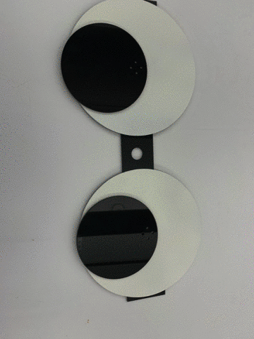

RECAP:
So, After finalising the idea, we did our Prototyping-I. In which we use ipad to run the concept i.e. googly eyes following you as you pass through that lamp post. After getting some interactions from kids there, we made this as a product that can be installed at the location and we can record the interactions.
Process:
Step 1
We had the concept in our mind, all we had to do was to make it real. This started with Laser Cutting. We laser cut the acrylic board to the structure needed for the eyes and the setup.
Step 2
So, we got the black acrylic board, so we needed the white part of the eye. So, we did white Spray Painting on the black acrylic board so that we can have our eyes ready.
Step 3
After we had all the necessary things to made the structure, we started assembling it. After assembling, we had something that we can test on.
Testing
We had our working project after hours of hard work. It was time to test the product and our hard work. It worked!
Final
After successful run during testing stage, we installed it at our location (Irving Square Park, Bushwick). Here is the short video of people reacting to the product:
Problems Faced:
We faced couple of problems, during our prototyping at park which we are going to resolve and might come up with a better product.1. The product was heavy to hang it with the rope on lamp pole, so we have to hold it during prototyping.
2. The eye on the right side(of user) was not working perfectly. It was a mechanical failure.
3. People were not passing through the pathway, as I were holding and standing, so they thought I am performing some activity.
4. Not every people who were passing were noticing the eyes(product).
5. Sometime eyes were not able to detect someone passing through.
What's Next?
After all the problems faced, we are going to try something new with our product like:1. Probably new location in the park, or maybe new Lamp post.
2. Improved mechanical stability to stare/follow people better.
3. Improved detection algorithm, so we didn't miss anyone.